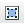

#textareaId: 将页面中 id为textareaId 的 textarea替换为编辑器;
Plugins: 为需要加载的插件名称, 多个以,号分隔, 例如:
KE("#textareaId").Use("font,image,separator")
// separator 为在当前位置插入分隔符
Cfg: 为编辑器的全局配置以及加载插件的插件配置, 例如:
{
//是否监控编辑器所属的表单提交
"attachForm":true,
//编辑器内弹窗z-index下限, 防止互相覆盖, 请保证这个数字整个页面最高
"baseZIndex":10000,
"pluginConfig": pluginConfig
}
elementpaths
主要用户开发, 显示光标处所在dom路径.
sourcearea
点击后可以查看编辑器产生的html代码.
preview
点击后可以弹出新窗口, 查看编辑器的内容预览.
templates
点击后可以弹出模板选择窗口, 选定后可以将模板代码插入到编辑器光标所在处.
separator
间隔线.
undo
可以撤销重做.
removeformat
可以清除选择区域的编辑格式(字体, 大小, 加粗).
font
大小: 可以改变选择区域字体的大小.
字体: 可以改变选择区域的字体种类.
粗体: 可以将选择区域文字加粗.
斜体: 可以将选择区域文字倾斜.
下划线: 可以给选择区域文字加下划线.
删除线: 可以给选择区域文字加删除线.
format
可以将光标所在处块加入标题格式.
forecolor
设置选择区域的文本颜色.
bgcolor
设置选择区域的背景颜色.
list
为选择区域或光标所在处加上项目编号.
为选择区域或光标所在处加上列表编号.
indent
减少光标处的缩进量.
增加光标处的缩进量.
justify
左对齐: 光标所在块左对齐.
居中对齐: 光标所在块居中对齐.
右对齐: 光标所在块右对齐.
link
编辑选择区域的超链接.
image
输入图像地址将图像插入到光标所在处.
flash
输入flash地址将flash插入到光标所在处.
music
输入音乐地址将音乐插入到光标所在处.
smiley
选择表情并将对应表情插入到光标所在处.
table
输入表格相关参数并将对应表格插入到光标所在处.
resize
可拖动调整编辑区域大小.
pagebreak
插入分页标记.
maximize
将编辑器充满整个屏幕.

pluginConfig: 为各个插件的具体配置, 配置形式为:
{
"插件名":插件配置
}
图片插件配置
pluginConfig:{
// 图片插件配置
"image":{
//上传图片配置，不需要上传功能可不配置
upload:{
//返回格式
//正确：{imgUrl:""}
//错误：{error:""}
//中文 \uxxxx 转义
//接受图片的服务器
//发送一个文件过去，格式为 multipart/form-data
//具体后端配置咨询：石冲
serverUrl:"/code/upload/upload.jsp",
//传给服务器的格外参数，是函数则传递函数执行结果
serverParams: {
// cookie 只能通过参数传递
cookie:document.cookie,
watermark:function() {
return S.one("#ke_img_up_watermark_1")[0].checked;
}
},
//传递给server的文件域名字
fileInput:"Filedata",
//限制上传的文件大小，单位KB
sizeLimit:1000,//k
//自己想要添加的其他输入域
extraHtml:"<p style='margin-top:5px;'><input type='checkbox' id='ke_img_up_watermark_1'> 图片加水印，防止别人盗用</p>"
}
}
}
模板配置: 不需要模板功能不需要配置
{
"templates": [
{
//显示模板的简单介绍
demo: "模板1效果演示html" ,
//插入到编辑器区域的具体内容
html: "<div style='border:1px solid red'>模板1效果演示html</div><p></p>"
},
{
demo: "模板2效果演示html",
html: "<div style='border:1px solid red'>模板2效果演示html</div>"
}
],
}
字体大小配置: 不要限制字体大小不需要配置
{
"font-size":{
//字体大小下拉框的配置
items:[{
//真实的字体大小值
value:"14px",
//字体大小选项框样式，可不配置
attrs:{
style:'position: relative; border: 1px solid #DDDDDD; margin: 2px; padding: 2px;'
},
//单个字体大小的显示值
name:" <span style='font-size:14px'>标准</span>" +
"<span style='position:absolute;top:1px;right:3px;'>14px</span>"
}]
}
}
字体种类配置: 不需要限制字体种类可不配置.
{
"font-family":{
items:[{
//显示值
name:"宋体",
//真实值
value:"SimSun"
},
{name:"黑体",value:"SimHei"},
]}
}
}
草稿箱: 不需要草稿箱功能可不配置.
{
"draft":{
//分钟设置：每隔几分钟保存一次
interval:5,
//最多保存几条历史记录?
limit:10,
//草稿箱帮助文案，可不设置
helpHtml: "<div " +
"style='width:200px;'>" +
"<div style='padding:5px;'>草稿箱能够自动保存您最新编辑的内容，" +
"如果发现内容丢失，" +
"请选择恢复编辑历史</div></div>"
}
}
拖放: 不需要可不设置.
{
"resize":{
//只能在y轴拖放，[“x”,”y”]表示任意拖放
direction:["y"]
}
单独为帮派开发的插件, 若需要使用请引入外部js
<script src="http://a.tbcdn.cn/s/kissy/1.1.5/editor/biz/bangpai/editor-plugin-pkg-min.js"></script>
图片批量上传示例:
{
"bangpai-upload":{
//同图片上传插件配置
serverUrl:"/code/upload/upload.jsp",
serverParams:{
waterMark:function() {
return S.one("#ke_img_up_watermark_2")[0].checked;
}
},
extraHtml:"<p style='margin-top:10px;'>" +
"<input type='checkbox' " +
"style='vertical-align:middle;margin:0 5px;' " +
"id='ke_img_up_watermark_2'>" +
"<span style='vertical-align:middle;'>图片加水印，防止别人盗用</span></p>",
sizeLimit:1000//k,
//新增配置：可同时显示的图片列表个数
numberLimit:15
},
}
国内视频插入可直接输入tudou,youku,ku6的url进行视频粘贴.
{
"bangpai-video":{
urlCfg:[
{
reg:/tudou\.com/i,
//地址配置后端咨询：石冲
url:"http://bangpai.daily.taobao.net/json/getTudouVideo.htm?" +
"url=@url@&callback=@callback@"
}
]
},
}
虾米音乐插入无需配置, 只要 use 即可.
{
"bangpai-music":{}
}
展示页面同样需要引入 editor css, 并且将从数据库中得到的编辑器生成内容用 <div class="ke-post"></div> 包裹起来.